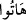
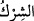
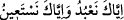
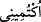
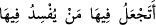
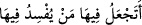

Yâni uydurdukları şeyler ve putların ilâhlığı da yok olup gitmiştir.
“ (getiriniz)” fiilinin aslı “ dür. Bu konudaki açıklama daha önce geçmişti.
Bil ki; “ (şirk)”, sadece zâhirî putlara ibâdet etmeye münhasır değildir; sadece
zâhirî putlar yoktur; bir de bâtınî putlar vardır ki nitekim kiminin putu nefsidir. Kiminin
ki de eşidir; öyle ki onu, Allah’ı sever gibi sever ve Allah’a itâat eder gibi ona itâat
eder. Bazılarınınki ticâretidir; ticaretine güvenip Allah’a itâati terkeder. Ne var ki
bunların hiçbiri kıyamet gününde insana bir fayda vermez.
Hikâye olunur ki; Mâlik b. Dinar (r.h.), namazda “ (yalnız sana ibâdet
eder yalnız senden yardım dileriz)” âyetini okuyunca bayıldı. Sonra kendisine sorulunca
dedi ki: Biz, “yalnız Sana ibâdet ederiz” diyoruz; nefsimize kulluk ediyor, onun
emrettiği şeyleri yapıyoruz. Ve “yalnız Senden yardım dileriz” diyoruz; başkasının
kapılarına koşuyoruz.
Rivâyete göre; Zekeriyyâ (a.s.), Yahyâ (a.s.)’ın ve ona tâbî olanların
öldürülmesinden sonra Yahûdîlerden kaçınca; şeytan bir çoban şeklinde ona görünüp
ağacın içine girmesini işâret etti. Zekeriyyâ (a.s.) ağaca: “ (beni gizle)” dedi. Ağaç
da yarıldı ve Zekeriyyâ (a.s.) onun içine girdi. Şeytan elbisesinin sarkan tarafını çıkardı
ve Yahûdîlere onu haber verdi. Onlar da ağacı testere ile kestiler. Dolayısıyla ağacın
yarılma hadisesi, Zekeriyyâ (a.s.)’ın ona sığınması için vukû bulmuştu. Şirk bütün
kötülüklerin en çirkini; tevhid de iyiliklerin en güzelidir.
Haberde vârid olduğuna göre, mukarrebin melekler, zikrullâhın şerefinden dolayı
(yeryüzüne) inerler.
Yine rivâyet edilir ki; Yusûf (a.s.) kuyuya atılınca, esmâ-ı hüsnâ ile Allah’ı zikretti.
Cebrâil (a.s.) bunu işitip dedi ki: Ya Rabbi, kuyudan güzel bir ses işitiyorum; bana biraz
mühlet ver.” Allah Teâlâ dedi ki: Siz bana, “ (yeryüzünde fesat
çıkaracak insanı mı (halife) kılıyorsun?)”, (el-Bakara, 2/30) dememiş miydiniz? Aynı
şekilde mü’minler, zâhirî ve bâtınî âdâbına riâyet ederek Allah’ı zikretmek için
toplandıklarında, melekler yine derler ki: “Ey Allahımız, bize izin ver; onlarla ünsiyet
edelim.” Bunun üzerine Allah Teâlâ onlara:
“ (yeryüzünde fesat çıkaracak insanı mı (halife) kılıyorsun?)”,
(el-Bakara, 2/30) dememiş miydiniz? Şimdi onlarla ünsiyet etmek istiyorsunuz” diye
karşılık verir.
Hadiste buyrulmuştur ki: “Cennete hepiniz gireceksiniz; ancak kabul etmeyen
(girmeyecek.)” Denildi ki: “Ya Rasûlallah, kabul etmeyen kimdir?” Buyurdu ki:
“Allah’tan başka ilâh yoktur” demeyen kimsedir.”[141]
Dolayısıyla kelime-i tevhid ile ölümden önce meşgul olmak gerekir. Çünkü bu kelime
tutunulucak sağlam bir kulptur (urvetü’l-vüskâ); cennetin bedelidir; bütün eşyanın
şehâdet ettiği şeydir.